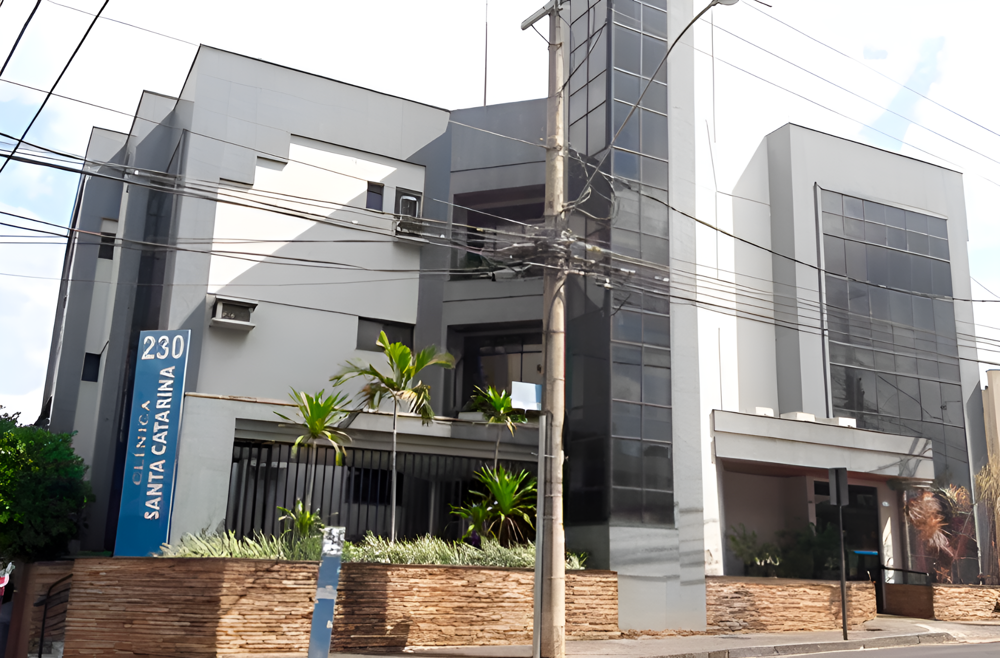

Excelência em Otorrinolaringologia
Cuidado especializado com anos de experiência em Uberlândia.
Agende sua ConsultaSobre o Dr. João Luiz Mamede
Com uma trajetória distinta e anos de experiência dedicados à otorrinolaringologia, o Dr. João Luiz Alves Mamede estabeleceu um padrão de excelência no cuidado ao paciente. Formado pela renomada Universidade Federal de Uberlândia (UFU), sua vasta experiência foi consolidada não apenas na prática clínica, mas também como docente federal na mesma instituição, compartilhando seu conhecimento com futuras gerações de médicos.
Sua carreira inclui passagens significativas como médico otorrinolaringologista no Exército e na Marinha, onde aprimorou suas habilidades em diversos contextos. O Dr. Mamede possui Mestrado pelo prestigioso Hospital das Clínicas da USP-Ribeirão Preto, demonstrando seu compromisso contínuo com a atualização científica através da participação assídua em cursos e congressos anuais.
Como membro ativo da Associação Brasileira de Otorrinolaringologia e Cirurgia Cérvico-Facial (ABORL-CCF), ele se mantém na vanguarda da especialidade, oferecendo aos seus pacientes os tratamentos mais atuais e eficazes, sempre com um foco em resultados bem-sucedidos e na qualidade de vida.
Serviços Diferenciados
Oferecemos um atendimento completo e personalizado em otorrinolaringologia, incluindo consultas detalhadas, diagnóstico preciso e tratamento eficaz para diversas condições.
Exames Complementares Avançados
Realizamos exames de vídeo endoscopia diretamente na clínica para uma investigação aprofundada das cavidades nasais, garganta, voz e ouvidos:
- Nasofibroscopia
- Videolaringoscopia
- Nasofibrolaringoscopia
Avaliação Audiológica Completa
Contamos com uma Fonoaudióloga dedicada para a realização de exames audiológicos abrangentes, essenciais na avaliação da audição e no diagnóstico de tonturas.
Atendemos pacientes particulares e diversos planos de saúde, buscando sempre oferecer o melhor cuidado.
A Clínica
Nossa clínica está convenientemente localizada no coração de Uberlândia, oferecendo um ambiente moderno, confortável e equipado para proporcionar o melhor atendimento.
Clínica Santa CatarinaAv. Getúlio Vargas, 230 - Sala 106
Centro, Uberlândia - MG
CEP: 38400-434

Contato e Agendamento
Agende sua consulta ou tire suas dúvidas entrando em contato conosco. Nossa equipe está pronta para atendê-lo.
Telefones Fixos
(34) 3088-9540
(34) 3088-9541
(34) 3088-9542
(34) 3088-9543